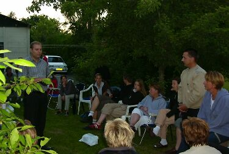

|
Нидерланды (Июнь 2003) - Нидерланды: день 5
Июнь 15, 2003 /9804 PB NOORDHORN, NETHERLANDS/
Поужинали все вместе и Сергей с Мариной уехали. А я с хозяйкой и Ролиндой повезли её парня домой. Ему было лень ехать после вчерашнего вечера домой, вот он и остался у нас ночевать. Пока его везли, они все трое рассказывали мне про местные достопримечательности. Привезли его, прощались. По дороге домой заехали в одно место, чтобы забрать одного дядю. Место было чем-то похоже на лагерь и автостоянку одновременно. Я так понял, там живут беженцы.
Не помню, что было до вечера, но вечером мы собрались все вместе, кто приехал на отдых и те, к кому мы приехали. Я так понял, что этот дядя будет переводчиком на этом вечере. Поиграл я немного в настольный теннис (кстати, я неплохо играю, я и сам не ожидал, что после двухлетнего перерыва я буду так играть:)). Потом сели все в кружочек и мой отец и наш знакомый начали толкать речь, а переводчик, соответственно, переводить.

Переводчик (слева), а я там в середине снимка, только отвернулся :)
Потом я почувствовал, что мне холодно и вместе с Франсикой и Ролиндой поехал домой. Когда приехали домой, Ролинда предложила мне попробовать нового напитка. По содержанию алкоголя он не уступает пиву, но из-за разных лимонных добавок на вкус как лимонад, в общем, мне очень понравился. Пьётся быстро и сначала ничего не чувствуется, но потом симптомы такие, как и у пива, ну типа веселее становишься :). Вот, вместе с этой бутылкой я начал смотреть фильм про Джеймса Бонда, последнюю на данный момент серию. Если я не ошибаюсь это 'Die Another Day'. Фильм, конечно, фигня. Мне понравилось только начало, где тёти танцуют в текстурах изо льда и пламени, и звучит музыка Мадонны. Кстати, сама Мадонна тоже решила сняться в этом фильме.
Till next time.
finn ©
|